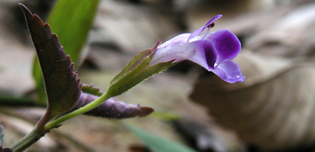
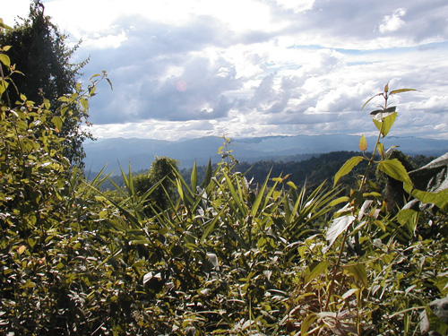
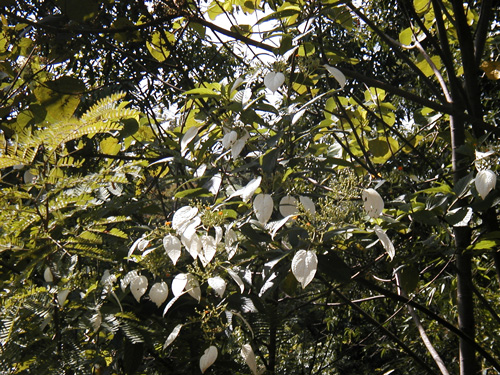

Laos Trav-E-Logs©
| Luang Nam Tha, Muang Sing | |
| back: Luang Prabang | Hilltribes dominate the region. |
================================= Luang Nam Tha, Muang Sing, and finally Xiang Kok (to catch a boat down-river to cross into Thailand) were the last three places on my rather short list of Lao places to visit. But it didn't turn out that way. Read on . . . . =================================
June 19 - 24, 2003
Luang Nam Tha
|
Went to a tour agent in Luang Prabang to help plan my last 5 days in Laos, because my book was close to worthless beyond the popular tourist destinations of Vientiane, Luang Prabang, and Van Viang. She even let me take pictures of write-ups in her expanded tour book. Her only payment was commission on the bus tickets I was happy to purchase through her. At 8 AM the bus leaves north for Udomxai, where it makes connection with another traveling west to Luang Nam Tha. It's early evening by the time my pack finds the floor in another guest house. This provincial capital, or better yet large village, is usually referred to as "Nam Tha", after the river by the same name. It has an old section and a new section several miles north on the main road. The town itself has little to offer, but the surrounding countryside and tribal villages are the reason more backpackers are visiting the area. Rented a bike for a very full day. |
Photos, clockwise from top right: Who could resist taking photos of these children?; Foot-traffic bridge; Village swimming hole; Provincial market; Touring bike; Flowers are popular; Picnic spot by falls.
Muang Sing
|
8AM bus for the 2-hour ride to Muang Sing, a large village with a mostly tribal population. After checking into another guest house, a backpacker talks about an unusual guide, sitting in a tearoom just a few doors down. He describes him, and off I go, as finding a tall, part French, part Cambodian guide should not be difficult. There he is, sitting at a table finishing his tea and meal. His trekking clothes are being laundered, so he is wearing a traditional man's cloth similar to a sarong. After a quick self-introduction, I explain that my visa expires in two days, and that I want to go on a trek with him today, because he was highly recommended. He describes the 3-day trek from which he has just returned. Would he take me on his three-day trek, leaving immediately, and returning tonight, as one day is still needed for transport to the border? Puzzled by my request, explanations are needed to convince him, and we leave within the hour. A mini-truck is used to deliver and retrieve us from the trailhead, thereby saving us several hours of walking. Over the next 7+ hours, we discuss many subjects while walking on a maze of paths through the forest. His parents disappeared at the hands of Pol Pot, so the Communist Party is his foster mother, father, religion. Traveled extensively over the region, including Cambodia, Viet Nam, Laos, Myanmar, and China. Does not believe in borders. Two workmen captured a bamboo muskrat, and had planned to cook it for a meal that evening. We bought it from them, and after they continued down the trail, set the poor animal free. China has built several dams up river, making river travel difficult at most times of the year. Consider going back to Nam Tha and take transport south through the jungle to the Huay Xai border crossing, as there will not be time to back-track to Nam Tha if I continue to Xiang Kok. Probably the best and most reasonably priced trek anyone could ever hope for. Photos and captions show many highlights of the day. Clockwise, from the top: My guide poses by a gate to an Animist village; Special supply stop; Colorful mushrooms line the path; Young plants along the border; Captured bamboo muskrat heading for the kitchen, and empty noose after we set him free; Colorful seeds on the path; "Chinese village is just down this path"; small flower sparkles in the sunlight.  |
Panoramic shot below shows Myanmar to the left, China to the right, and Laos in the foreground.
The veranda of the guest house was an ideal place to "people watch" while waiting for the bus back to Nam Tha the next morning. Western clothing can be so boring!
Road to Huay Xai
|
Taking my guide's advice, bused back to Nam Tha. Before checking in to the same guest house, inquires were made at the bus station about the unpublished trip south over a new road through the jungle to the Thai border crossing at Huay Xai. One trip per day, pay driver, leaves 8 AM, be here at 7:30 AM. It's 5:30 AM and my visa for Laos expires today. Not wanting to leave anything to chance, I'm at the bus station at 6 AM, and locate the truck heading to Huay Xai. It's a rather new Toyota 4WD pickup truck, with extended cab for five passengers up front, and two rows of but-breaking benches bolted in the covered bed for 10 more people. Most luggage is strapped to the rack on top. The driver was just pulling in. Pointing inside the cab at the seat in back of the driver, I say "Here?" He nods. I pay him, and he says leave 7:30. Back to guest house, shower, pack, and return to the bus station to hand my pack up to the roof. "Here?" I say again, pointing to the same seat as before. He smiles, mumbles something, walks to the other side of the truck, and points to the window-seat right up front. He knows my elation by the smile on my face. But things get better. Now it's time to relax, grab some breakfast, and reminisce about my two weeks in Laos. Nothing went as planned; so saw more of the country, visited Wat Phu Champasak, biked and trekked in villages off the beaten path, set foot into China?, looked into Myanmar, and now I'm about to ride shot-gun, 250 Km over a new road through the jungle. Does it get any better? You decide. Two trucks are traveling in convoy this trip, but the other truck has brake problems, forcing us to stop occasionally to let the brakes cool off. Opportunity knocks! When the situation is understood, I motion to the driver to pick me up on the way; I'll be walking down the jungle road with my camera! By the third stop, several were following my lead. What a fantastic end to my Lao journey. The truck arrives in Huay Xai a few hours latter than normal. The border will be closing soon, but first the driver is given a token of my appreciation -- a U.S. silver dollar, just waiting for the right reason. At the border, one last kind event: A small fee per passport is charged after normal working hours; but this guard waved me through with a smile when I explained "no money left". Photos, clockwise from top: Driver straps my backpack to the top rack; Young ladies along the road; View of "Jungle highway" from the front seat; Panorama from crest of hill; Flowering tree; Typical view. Enjoy! Bill ------------------------------ Email me at the juno.com address "dancer2SEAsia" |
  |
"Travel is Fatal to Bigotry, Prejudice, and Narrow-minded ness" .... attributed to Mark Twain
| next: Chiang Kong, Chiang Rai |
| back: Luang Prabang |